The project archive
Real rooms.
Right here.
Completed bathrooms from Griffeen’s original project archive. Browse by location, or open any photo for a closer look.
75 photographs · 20 projects
Victoria, Churchtown
4 photographs
Published project archive

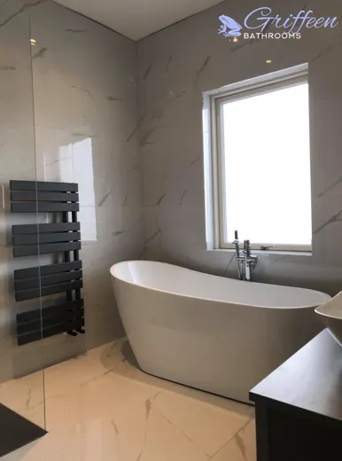

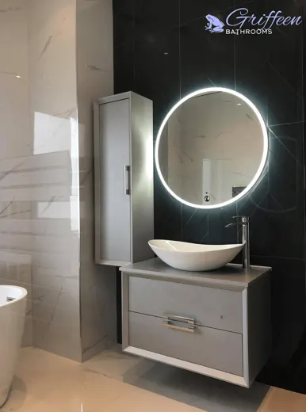

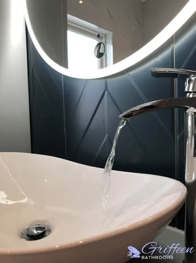

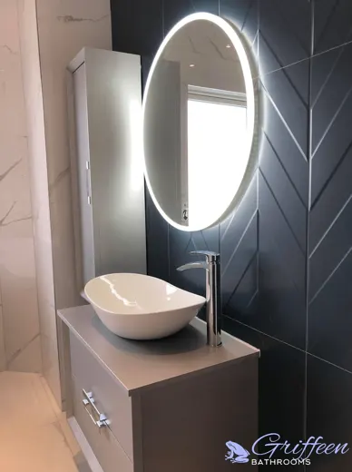
Garry, Wicklow
5 photographs
Published project archive

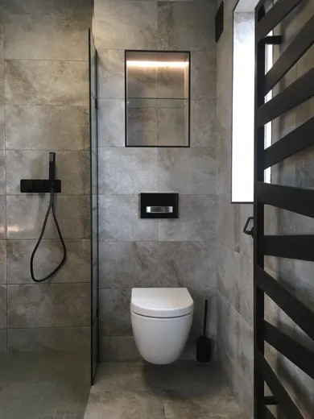

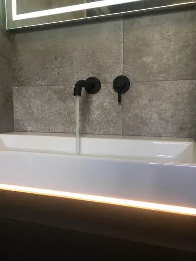

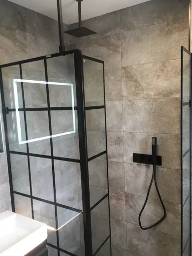

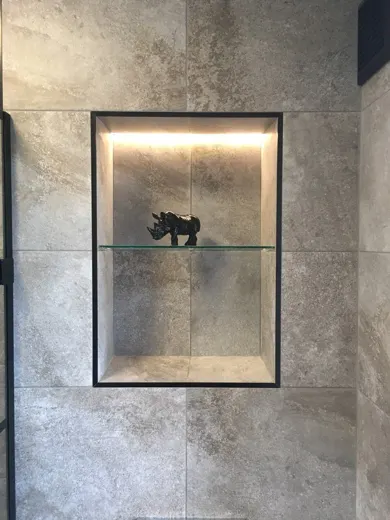

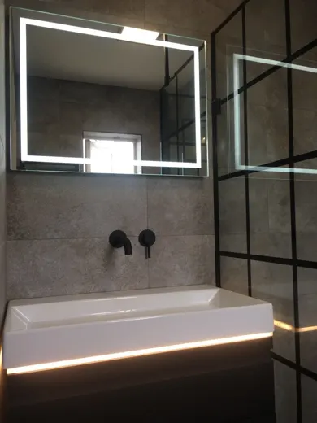
Victoria, Lucan
2 photographs
Published project archive

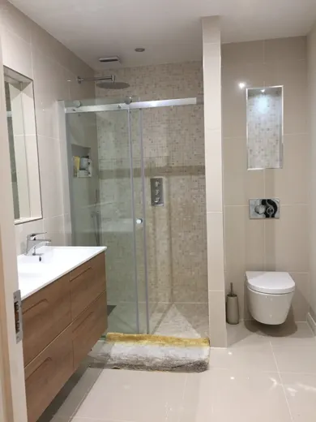

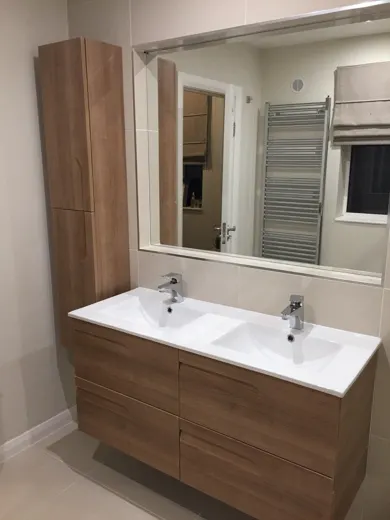
Aoife, Dundrum
2 photographs
Published project archive

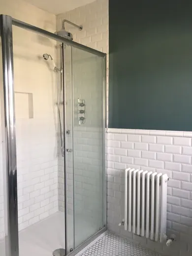

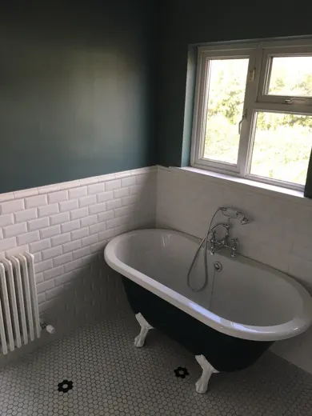
Ingrida, Lucan
8 photographs
Published project archive

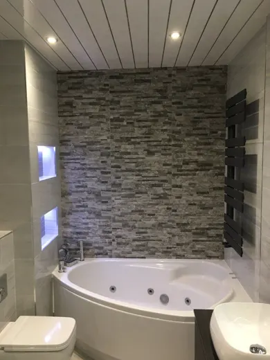


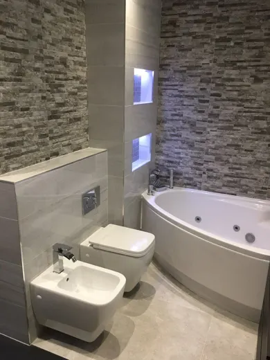

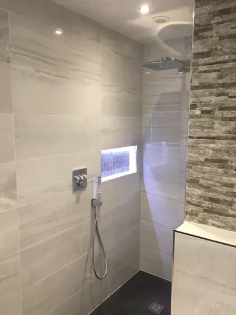

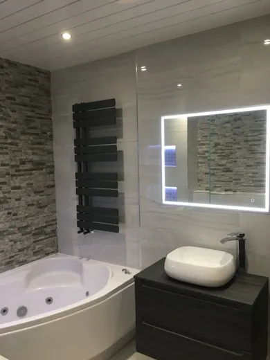

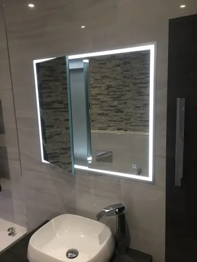

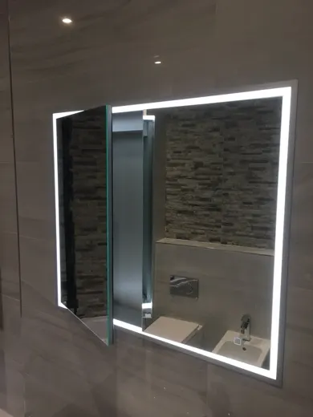

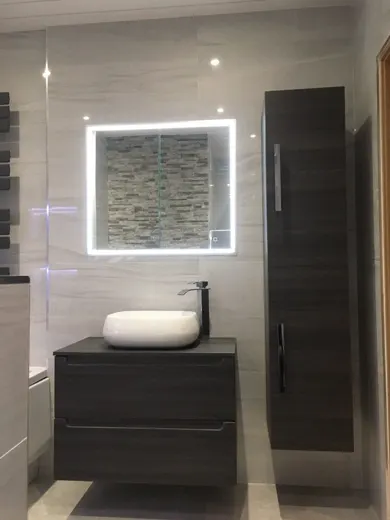
Brian, Dublin City Centre
8 photographs
Published project archive

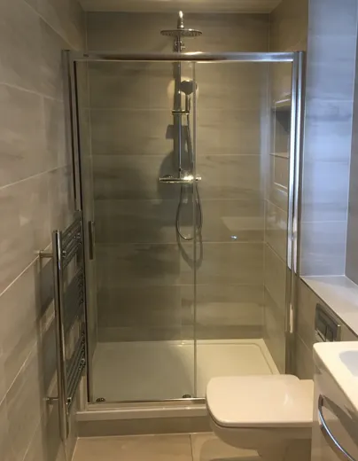

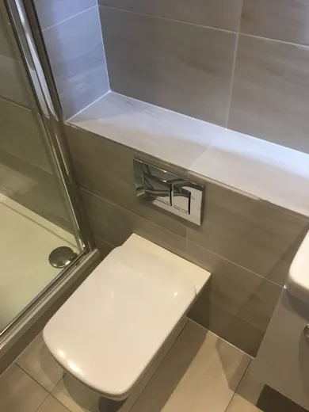

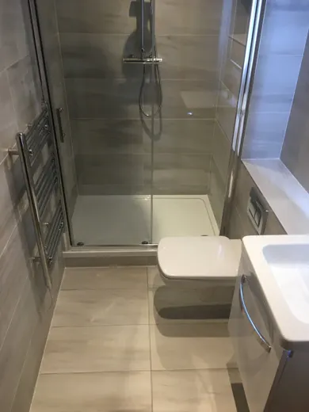

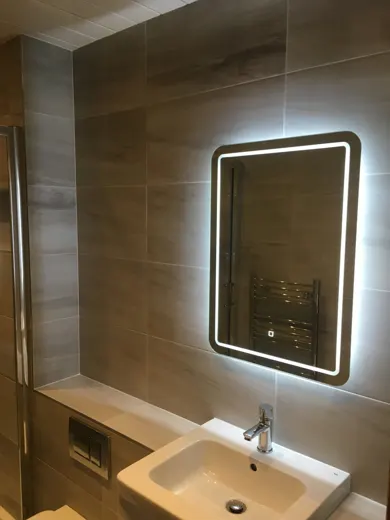

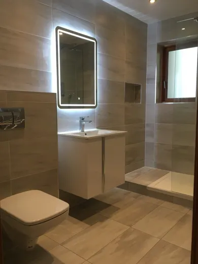

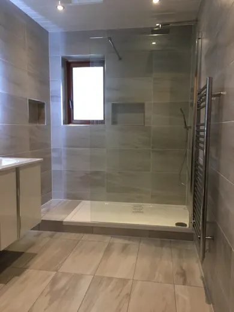

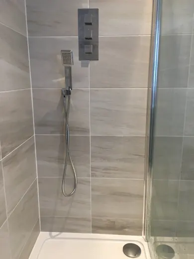

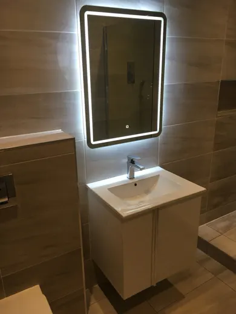
Chris, Carlow
5 photographs
Published project archive

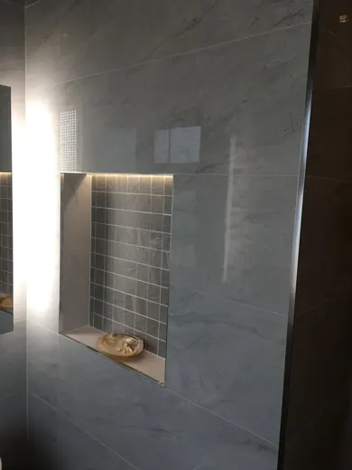

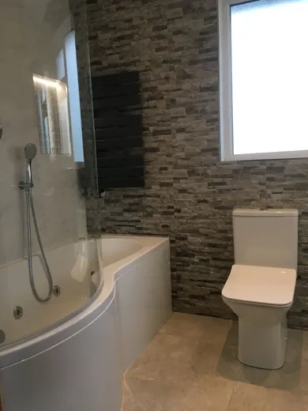

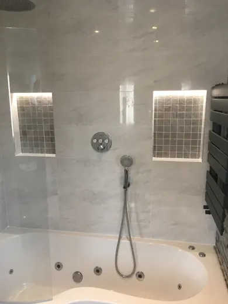

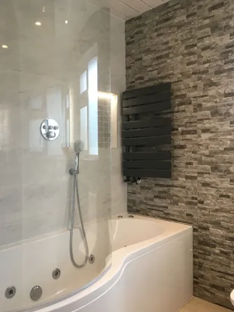

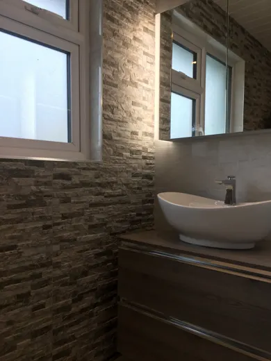
Brian, Lucan
3 photographs
Published project archive

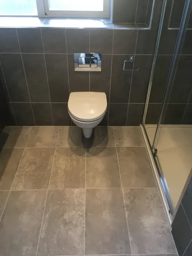

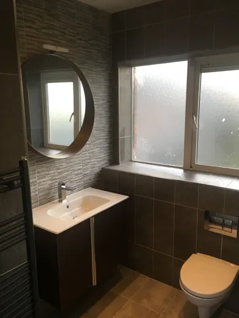

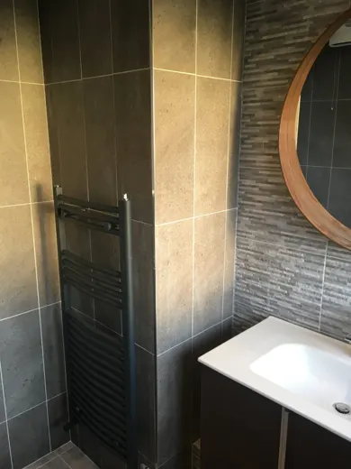
Maria, Lucan
2 photographs
Published project archive

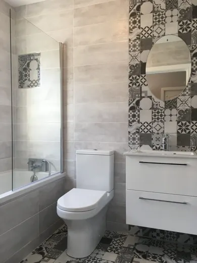

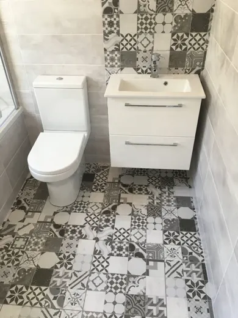
Sandra, Celbridge
3 photographs
Published project archive

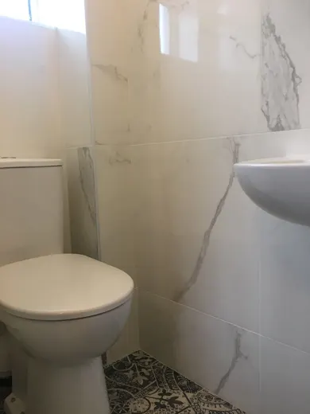

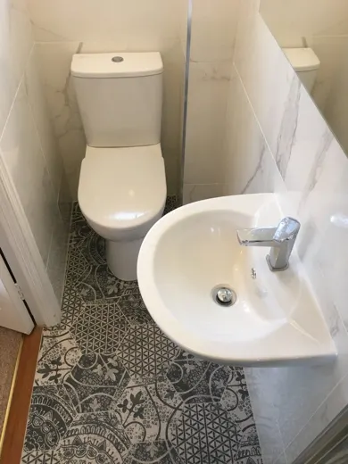

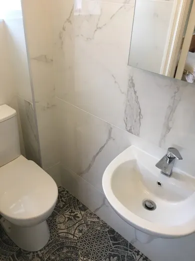
Deirdre, Clondalkin
3 photographs
Published project archive

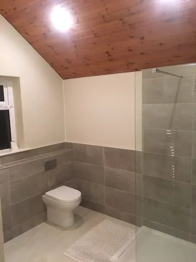

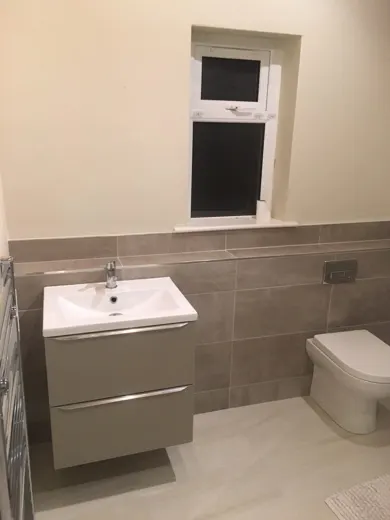

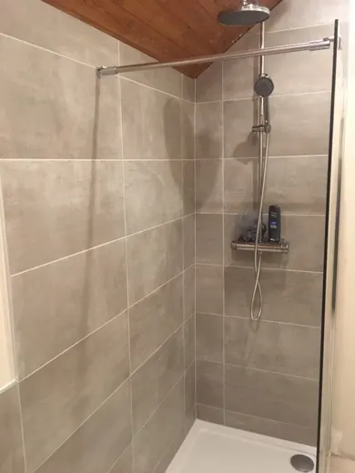
Alexandro, Adamstown
3 photographs
Published project archive

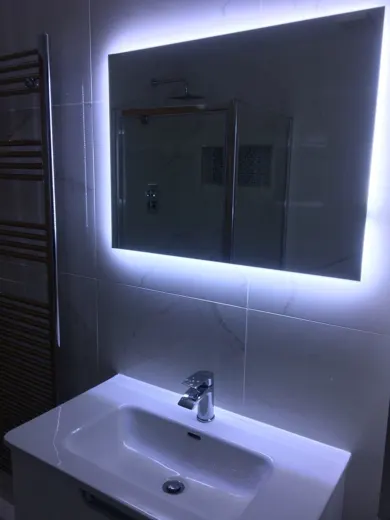

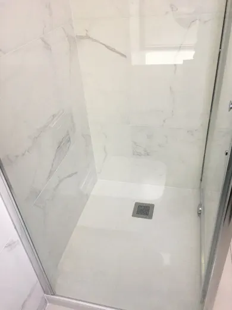

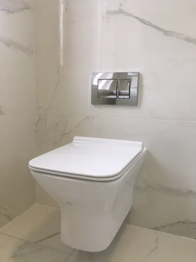
Sinead, Knocklyon
4 photographs
Published project archive

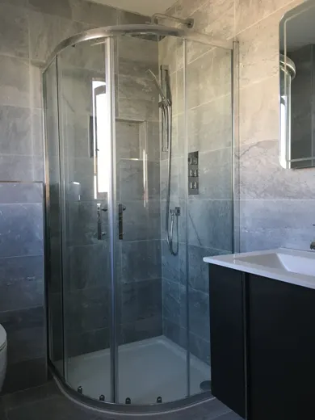

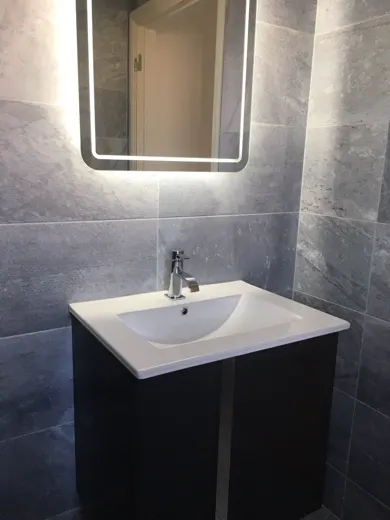

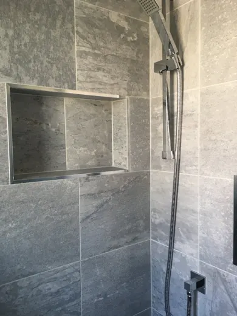

Tom, Clondalkin
2 photographs
Published project archive


Kirsty, Celbridge
6 photographs
Published project archive


Lorraine, Lucan
5 photographs
Published project archive


Laima, Adamstown
2 photographs
Published project archive


Geana, Lucan
2 photographs
Published project archive


Helena, Clondalkin
3 photographs
Published project archive


Allison, Lucan
3 photographs
Published project archive


Your room, next
Begin with
a conversation.
Tell us what you would like to change. The next step is to talk through your bathroom and arrange a property visit.
Get a free quoteGriffeen Bathrooms · Lucan
Hills Industrial Estate
Lucan, K78 E407
- Mon–Fri10am–2pm · 3pm–5pm
- Saturday10am–1pm · By appointment
- ClosedSundays & bank holiday weekends